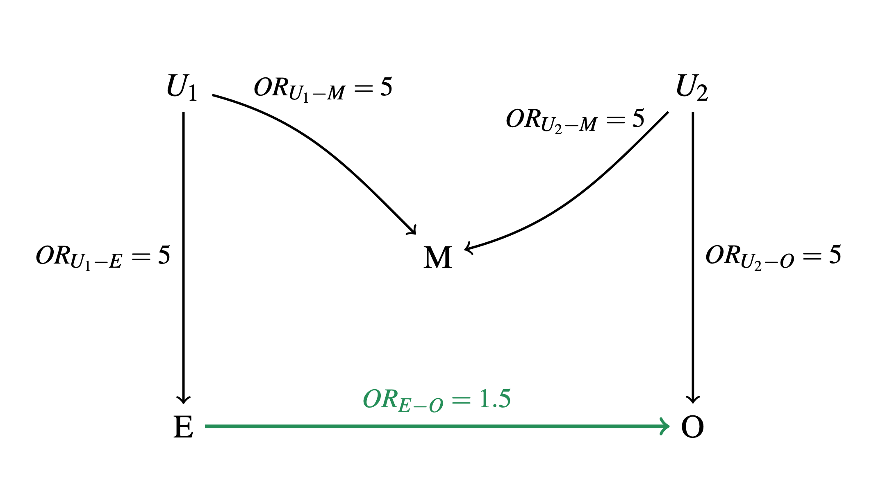

How-to
How-to.RmdExample use
library(ancestryDAGs)Excercise 2 from the course
Here I will just show a proposed solution to excercise 2 in to course material.

Model DAG the excercise is based on. Source: C. Wu
##ancestors are defined and sent to global environment
a <- ancestor(population = 10000, prev = c(0.1,0.1),anc.names = c("U1","U2"))
list2env(a,envir = .GlobalEnv)
#> <environment: R_GlobalEnv>
##child E
E <- child(baserisk = 0.05, por=5,parent = list(U1) )
##child M
M <- child(baserisk = 0.05, por=c(5,5),parent = list(U1,U2))
##child O
O <- child(baserisk = 0.05, por=c(1.5,5),parent = list(E,U2))
##transform it as the data frame
dat <- data.frame(U1, U2, E, M, O)
# gtsummary is used for nice tables
require(gtsummary)
#Crude analysis
crude <-
glm(O ~ E,
family = binomial(link = 'logit'), data = dat) |>
tbl_regression(exponentiate = TRUE)
#collider bias
collider <-
glm(O ~ E + M,
family = binomial(link = 'logit'), data = dat) |>
tbl_regression(exponentiate = TRUE)
#close all open paths
closed <-
glm(O ~ E + M + U1 + U2,
family = binomial(link = 'logit'), data = dat) |>
tbl_regression(exponentiate = TRUE)
# Merged table
tbl_merge(list(crude,collider,closed),
tab_spanner = c("**Crude**", "**Colliders**", "**All closed**"))| Characteristic | Crude | Colliders | All closed | ||||||
|---|---|---|---|---|---|---|---|---|---|
| OR1 | 95% CI1 | p-value | OR1 | 95% CI1 | p-value | OR1 | 95% CI1 | p-value | |
| E | 1.90 | 1.48, 2.42 | 1.87 | 1.45, 2.38 | 1.85 | 1.42, 2.39 | |||
| M | 1.58 | 1.24, 1.99 | 0.92 | 0.70, 1.18 | 0.5 | ||||
| U1 | 1.19 | 0.91, 1.53 | 0.2 | ||||||
| U2 | 5.92 | 4.94, 7.08 | |||||||
| 1 OR = Odds Ratio, CI = Confidence Interval | |||||||||